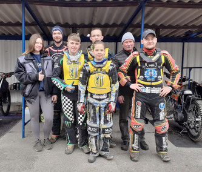
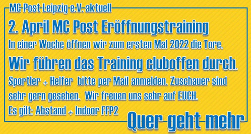
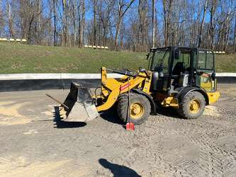
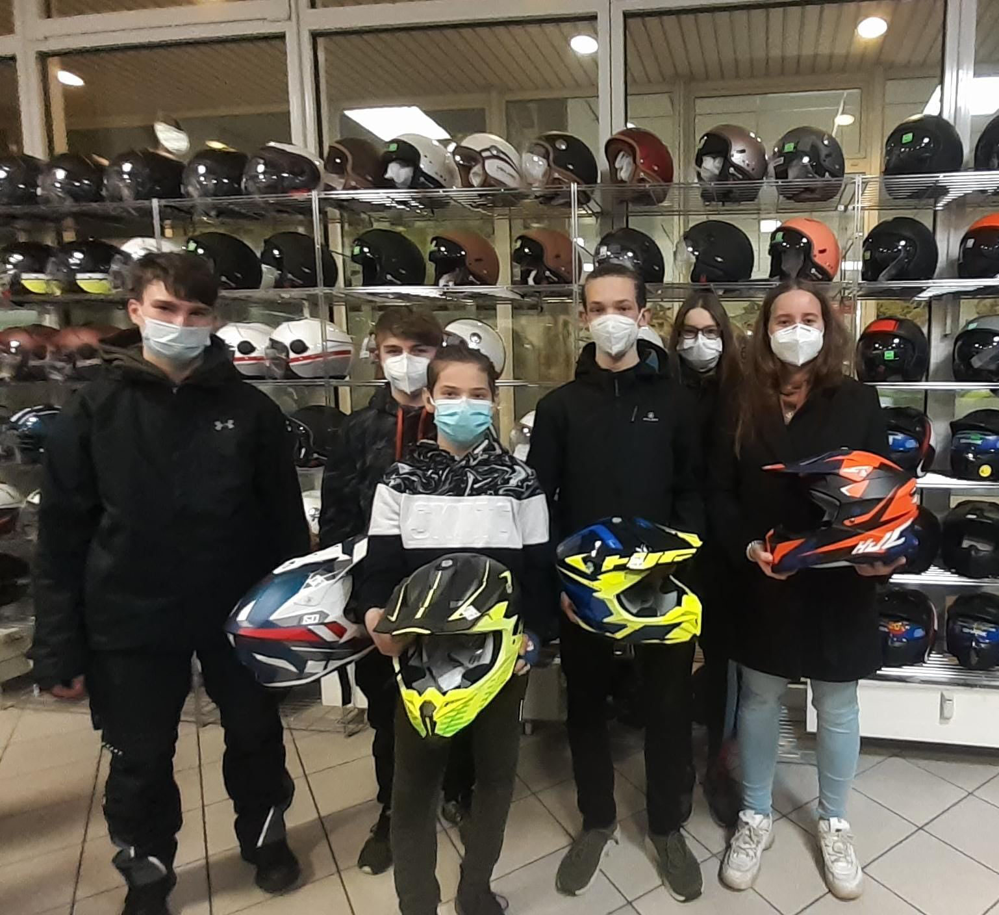

QUER geht MEHR im Motodrom am Cottaweg bei kühlen Temperaturen aber gut präparierter Bahn. Besonderen Dank an Sammy Ball dafür. Die Sportler hatten somit richtig gute Trainingsbedingungen. Die brauchen unsere Mädels und Jungs auch, denn es ist nicht mehr lange hin, bis zu den ersten…
Hallo Freunde, passt die Kombi noch und seid Ihr fit für die Sportsaison 2022? 2. April im weltbesten Motodrom am Cottaweg: Hier die Infos zur Veranstaltung: https://www.facebook.com/events/331125619043332/ #MotodromAmCottaweg #NBM #Speedway #Trial #Motodrom Motorsport in Sachsen Landessportbund Sachsen Sportjugend Leipzig Ahoi.Leipzig LVZ Leipziger Volkszeitung LVZ Sport…
Hallo Freunde, die letzten Wochenenden haben wir im Motodrom am Cottaweg wieder voll los gelegt, um die Voraussetzungen für die Saison 2022 optimal zu gestalten. Dass die Bahn wieder die gewohnte Standfestigkeit erhält und gleichzeitig so gutes Sickervermögen bei Regenschauern hat, waren wir mit Kind…
Hallo Freunde, vielleicht habt Ihr zum Jahreswechsel etwas unter der Überschrift “Was muss weg am Cottaweg” gelesen. Eins steht für uns fest: WIR NICHT! Wir sind der MC Post LEIPZIG und im Motodrom seit 47 Jahren zu Hause und wollen es auch bleiben. Unser Sport…
HJC Helmets Europe und Helmstudio Leipzig unterstützen 2022 erstmals Nachwuchssportler*innen des MC Post Leipzig e.V. Am 21. Februar erhielten wir die Chance, im Helmstudio Leipzig exklusiv Helme der Marke HJC zu testen. Wir freuen uns sehr, dass unseren erfolgreichen Junioren die Möglichkeit der Unterstützung gegeben…